Source assets
Uncategorized 3D meshesCategory-level shape collectionsPose datasets with object models
Source axes, scales and origins vary across datasets.
Universal Pose Convention for 3D Assets and Objects
OV-NOCS addresses object pose and shape representation across datasets. Semantic features, geometric structure and interactive annotation establish canonical object orientations and support paired multi-view data generation.
SHAPE CANONICALIZATION → MULTI-VIEW DATA
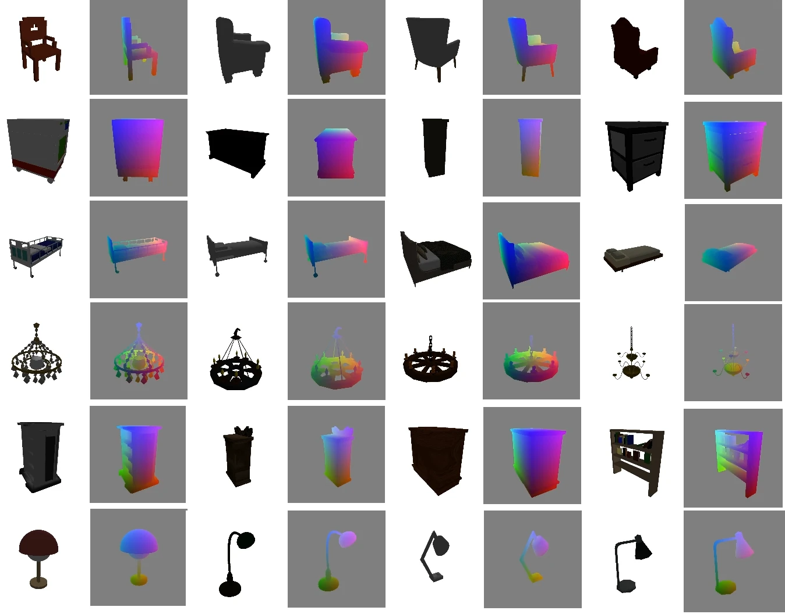
OV-NOCS / DATASET OVERVIEW
A consistent object convention connects heterogeneous 3D assets with object-centric images and scene-level annotations.
REPRESENTATION / OBJECT ↔ SCENE
Canonicalization defines a reusable coordinate system for each asset. Instance transforms place that asset in a scene; camera parameters connect the scene to image observations.
Source axes, scales and origins vary across datasets.
Semantic prototypes + geometric matching + annotation refinement
xc = Rc(xs − c) / sMesh · frame annotation · source IDInspect the method ↗Orbit cameras around one canonicalized asset. Pair appearance, foreground, depth and object-coordinate images by view ID.
Compose each object's inverse canonical transform with its instance scale, rotation and translation. Project scene geometry into a camera view.
xworld = Rinst Sinst [s RcTxc + c] + tinstThe same object coordinates remain attached to the surface as its scene placement and camera viewpoint change. Shared frames make orientation annotations comparable across assets and scene instances.
Right-handed: X right, Y front, Z up. Reference directions define the category frame. Bottle yaw uses a reference meridian because its shape is approximately rotationally symmetric.
Mesh and feature views use bbox centering and one maximum-side scale, preserving shape proportions. XYZ mesh colors map centered coordinates through xc + 0.5. Rendered NOCS uses the renderer's per-axis bounding-box normalization: RGB = (X, Y, Z).
World axes follow the source scene. Instance transforms map source meshes into that world. Depth lifting uses a pinhole camera with +X right, +Y down and +Z forward; stored renderer extrinsics are converted to that camera convention.
01 / PURPOSE · METHOD · RESULTS
Semantic prototype construction, geometry-aware fusion and match selection, followed by interactive refinement, asset export and multi-view rendering.
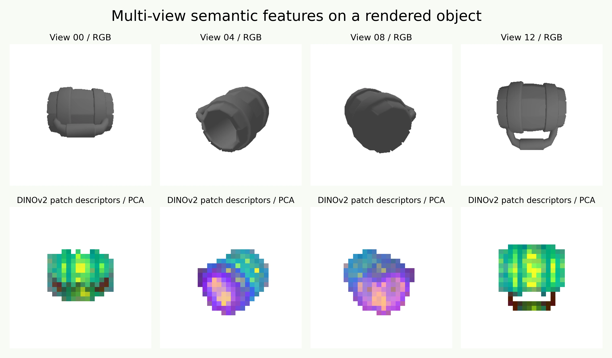
STAGE A / 01
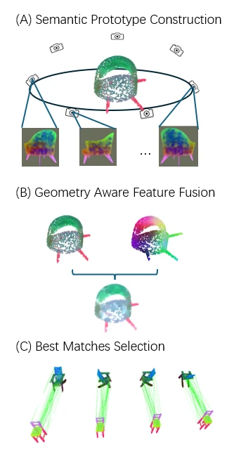
REPRESENTATIVE FULL PIPELINE RUNS
16-view RGB-D rendering → DINOv2 surface features → reference-frame annotation → within-category yaw matching → orientation review & mesh export → 8-view paired re-rendering. Each surface contains 4,096 descriptors; matching uses 2,048 keypoints per shape.
| Category | Instances | Reference direction / +Y |
|---|---|---|
| Teapot | 2 | Spout |
| Cabinet | 2 | Front face |
| Bottle | 3 | Reference meridian |
| Mug | 2 | Handle |
02 / SEMANTIC SURFACE REPRESENTATION
Multi-view descriptors are aggregated into an object-surface representation with 4,096 points and 384 feature dimensions per point, extracted from 16 newly rendered RGB-D views. Choose a category and rotate the surface to compare descriptor variation with canonical position.
Feature colors represent three principal components of the descriptors, computed independently for each object. XYZ colors encode canonical X, Y and Z after centering and uniform max-side scaling. The fixed corner triad tracks orientation independently of zoom.
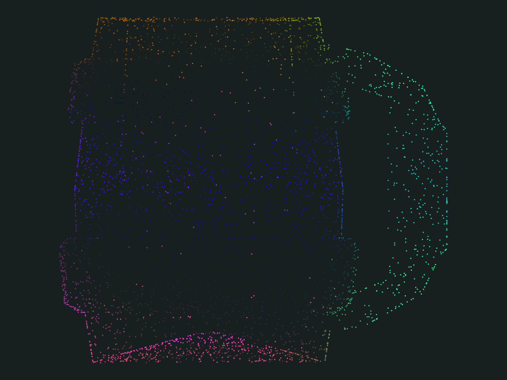
Multi-view RGB inputs of the same object
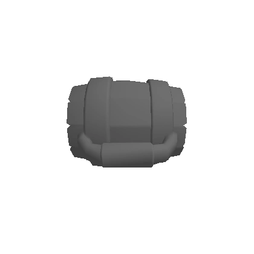
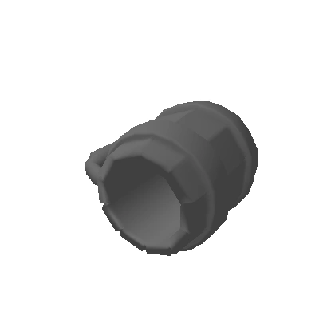
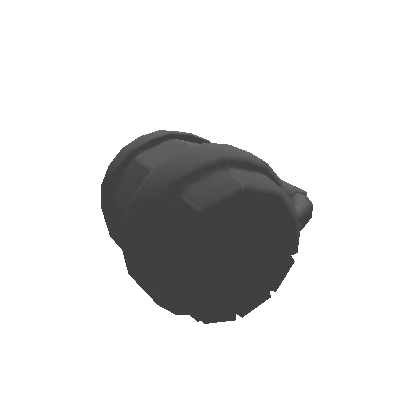
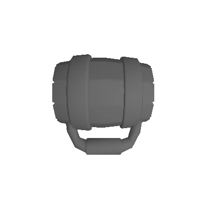
03 / ALGORITHM IN FOCUS
Inspect feature matching and rotation selection on freshly extracted object descriptors. Candidate scores are the residual yaw angles computed by the canonicalization stage.
Relate surface regions across shapes and select an orientation relative to a reference prototype.
Compare four Z-axis rotations using 64-dimensional co-PCA features and a 48-dimensional position encoding. Estimate relative rotation from feature correspondences.
Inspect cross-instance matches from four categories, together with a controlled +90° rotation. Toggle position encoding to compare candidate scores for the same pair.
Canonical frame: +Z up · +Y front · +X right. Candidates rotate about +Z. Residual yaw is a correspondence-based selection score, measured in degrees.
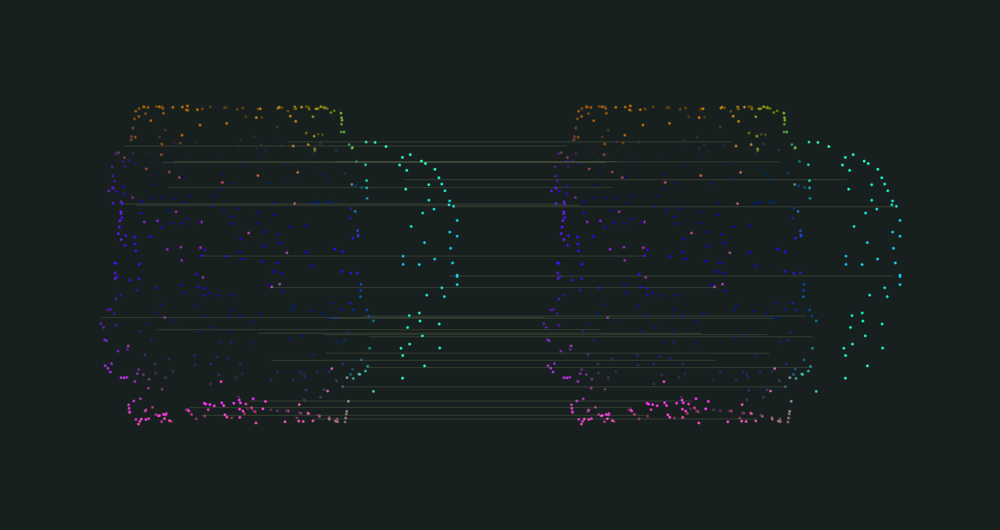
CANDIDATE ROTATIONS
Lower residual yaw determines the selected candidate.
04 / MULTI-DATASET EXPLORER
Explore objects from Objaverse-XL, Omni6DPose, 3D-FUTURE, HSSD and ShapeNet, with RGB, masks and NOCS paired by camera view.
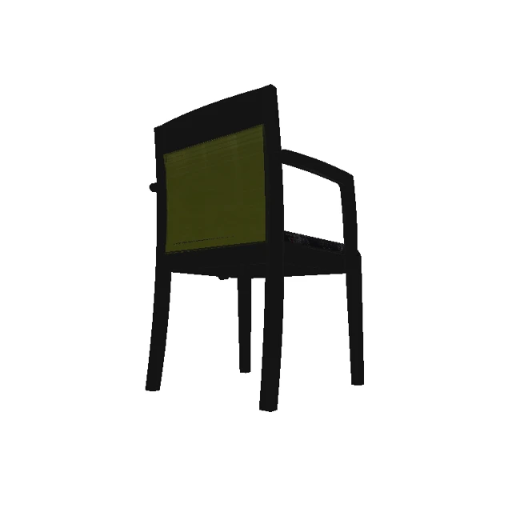
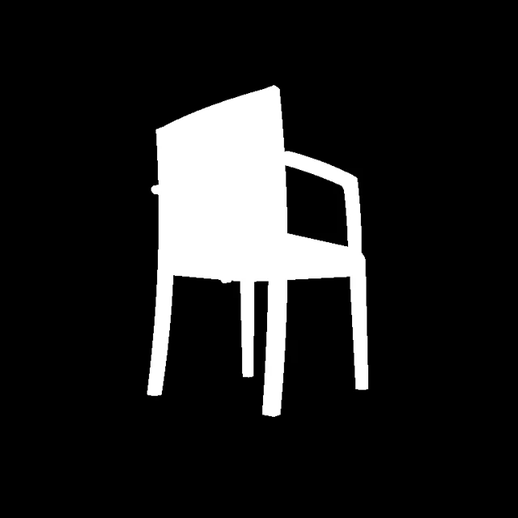
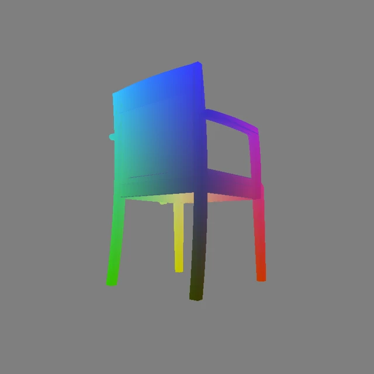
Each displayed instance contains 150 generated views; 15 are selected here. Use the slider to compare texture, silhouette and canonical coordinates at the same viewpoint. Playback traverses the selected camera IDs.
OBJECT DATA / RETRIEVE LOCAL RESULTS
Retrieve object-level results across five datasets. Each point represents a mesh export. Rotate the collection to inspect category clusters, compare dataset composition and retrieve processed examples.
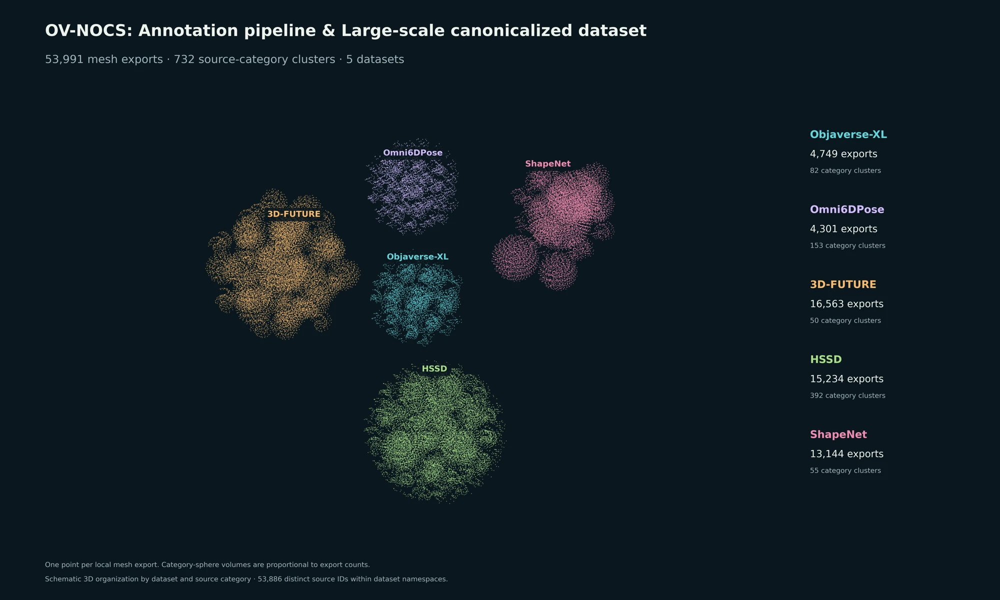
Category spheres are packed within each dataset, with volume proportional to their export counts. The spatial arrangement organizes dataset and category membership. The collection contains 53,886 distinct source IDs within dataset namespaces; 53,991 category memberships are retained. Stage indicators record matching local artifacts: mesh exports, RGB / NOCS archives or unpacked outputs, and single-view canonical previews.
05 / OBJECT FRAMES WITHIN SCENES
Connect object-centered coordinates with image-space annotations and scene geometry across indoor, outdoor and tabletop data.
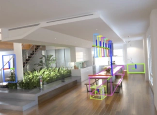
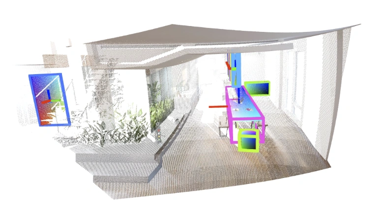
Indoor scene geometry with object frames shown in both the image and reconstructed scene.
HSSD / SCENE-TO-OBJECT COORDINATES
The canonical frame defined above is composed with the scene instance transform. Sampled surface points retain their scene transforms. Object up/front directions define canonical frames, followed by centering and uniform scale normalization.
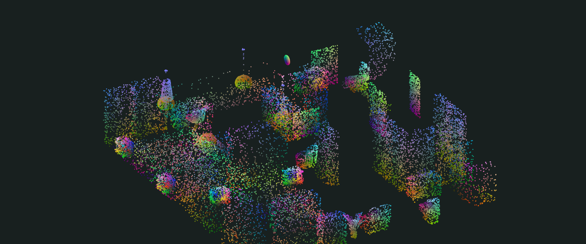
Associate each object’s normalized coordinates with its placement in a scene.
Canonicalize mesh coordinates using object up/front directions. Compose the inverse canonical transform with the instance scale, rotation and translation.
50 represented instances from one HSSD scene. The coordinate round trip agrees to floating-point precision.
xscene = Rscene S [RcanonicalT (s xcanonical) + c] + tColors encode uniformly normalized object coordinates. The layout slider rearranges the same sampled surface points into a canonical object collection.
06 / CANONICALIZATION & RENDERING
Inspect workflow outputs, from within-category orientation relationships to RGB/NOCS representations across data sources.
Mug geometries in a shared reference frame, showing shape variation and canonical orientation.
A flowerpot-category cluster for inspecting orientation relationships among similar shapes.
Surface descriptors from multiple viewpoints, visualized with PCA color projections.
Paired RGB and NOCS outputs across categories, representing appearance and object-surface coordinates.
07 / WORKFLOW & RESULTS
Interactive annotation and multi-category rendering sequences demonstrate the construction and representation of canonicalized 3D assets.
08 / OBJECT-CENTRIC DATA REPRESENTATION
Shape canonicalization organizes objects from heterogeneous sources into explicit reference frames. Rotation annotations, 3D assets, camera parameters and per-view images together form an object-centric data representation.